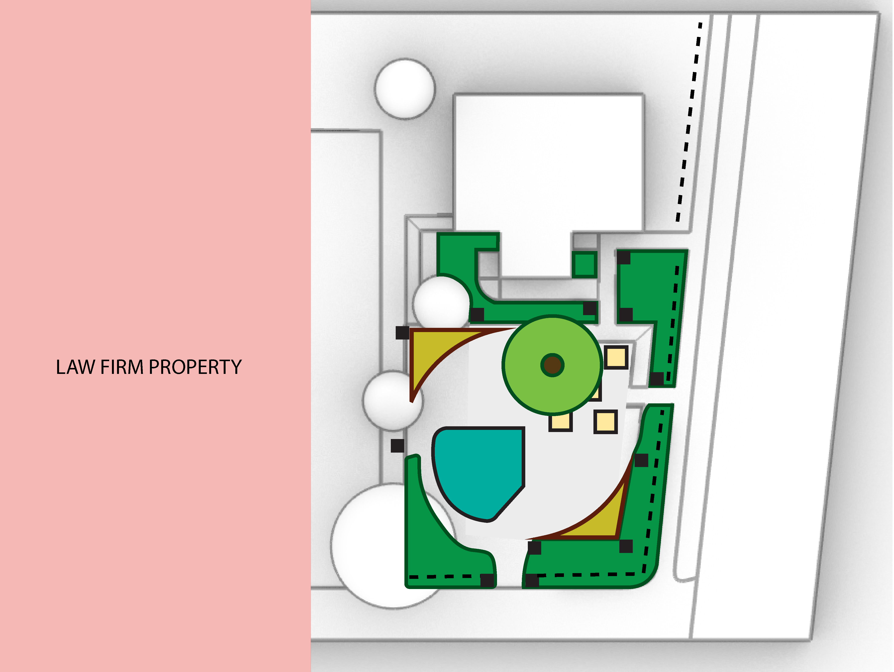
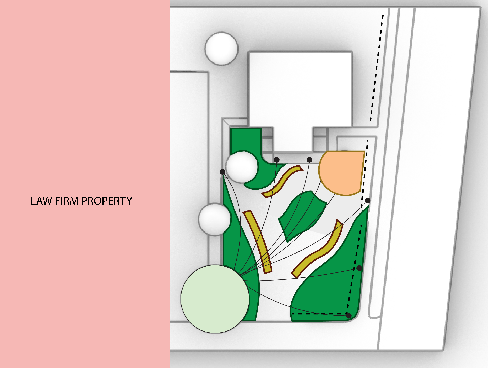
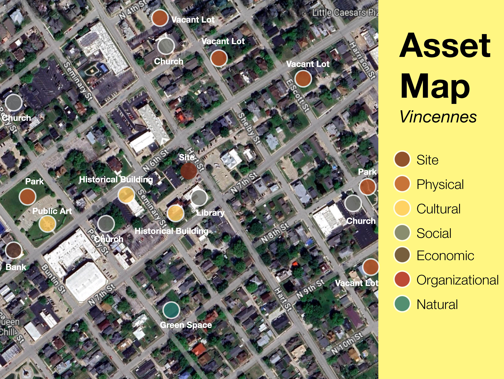
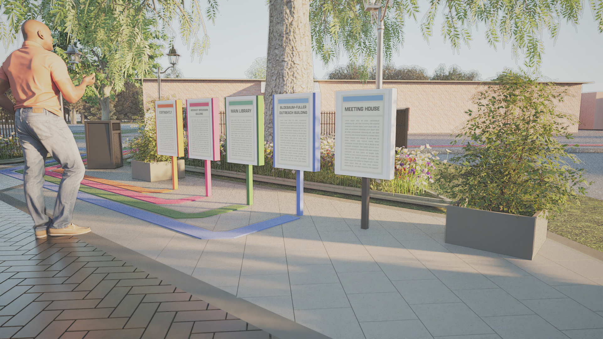
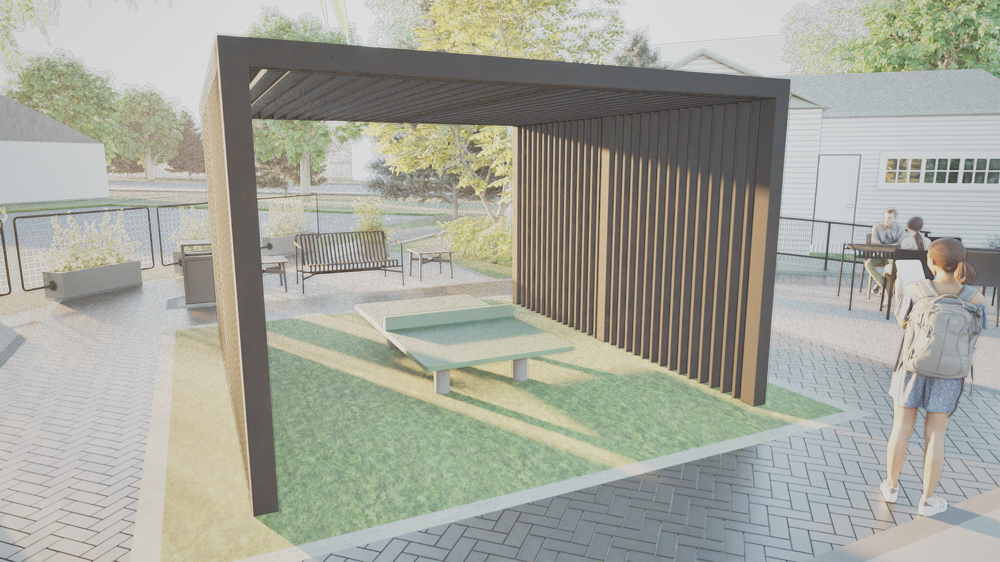
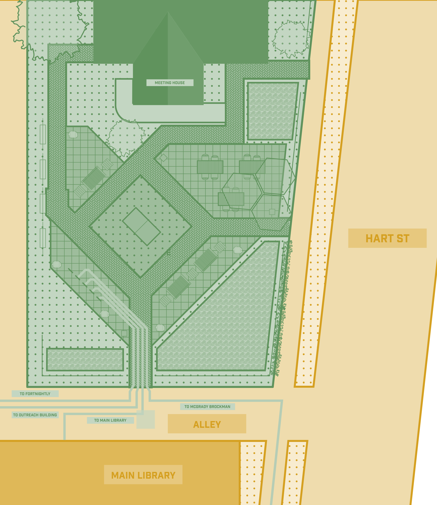

Landscape
Pocket Park · Vincennes, IN
Knox Co. Public Library Pocket Park

Role
Design · ModelingScope
Landscape · Pocket ParkTools
Rhino 8 · TwinmotionAt the center of the Knox County Library campus was an old parking lot that had turned into a few tables and chairs for reading.
This design turns that unused space into a more welcoming place for people to gather, read, and spend time between the library buildings.
01Problem
The space was used occasionally, but it did not feel connected to the rest of the campus. It had a few scattered tables, but no clear purpose or reason for people to stay.
02Solution
The parking lot becomes a flexible outdoor gathering space centered around a directory that helps guide visitors through campus. Paths inspired by metro lines lead to each library building, while a custom fence, ivy edges, family seating, and ping pong tables make the space feel more comfortable and active. It can work for readings and events, but it is also a place where people can sit, relax, and connect.
03Research




Process
The challenge with this space was making a small area a multiuse space. After a lot of programming iterations, the 2 versions were presented. The client and I decided to take the layout of version 1 with the diamond shape of version 2.
04Product




